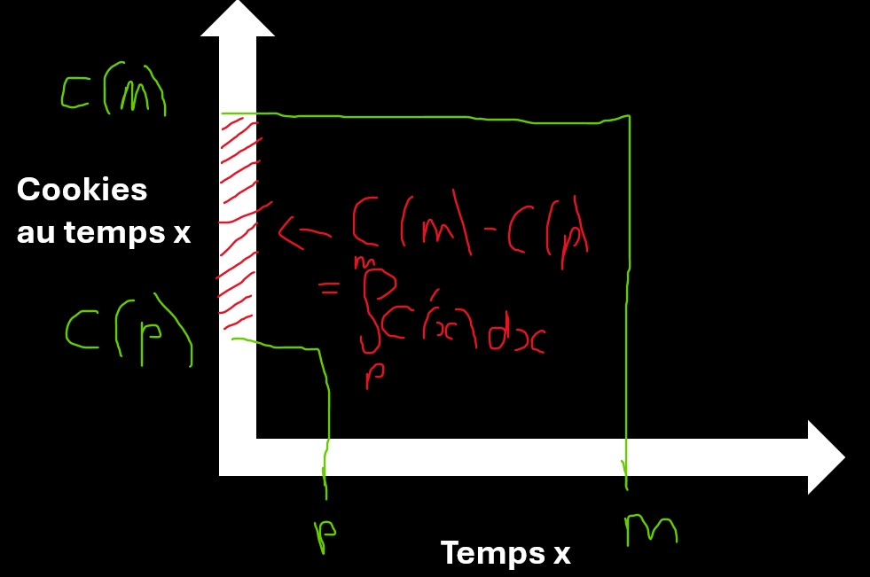
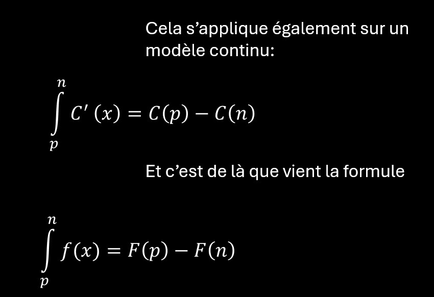
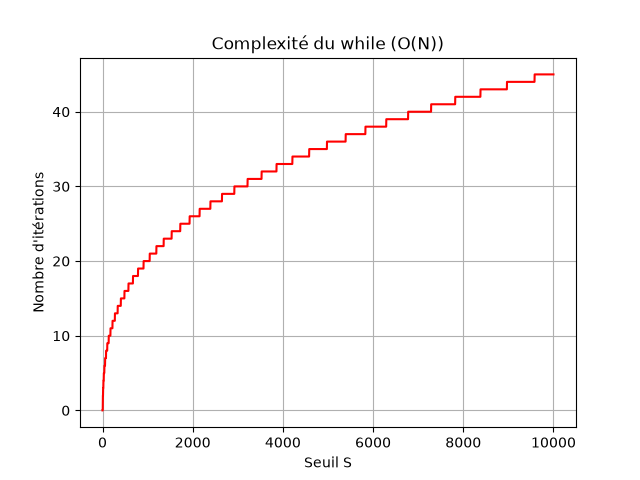
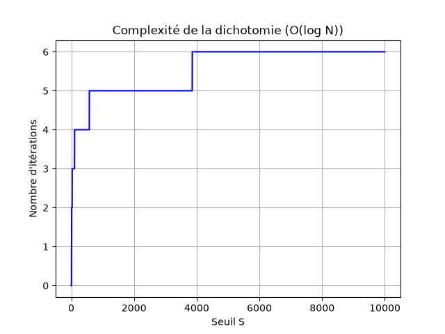
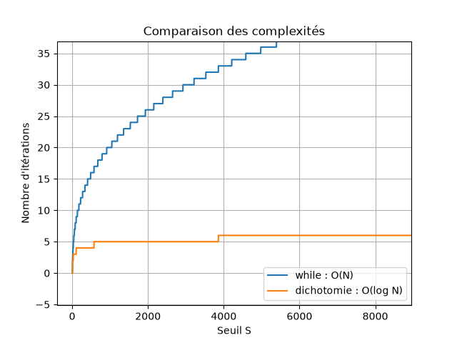
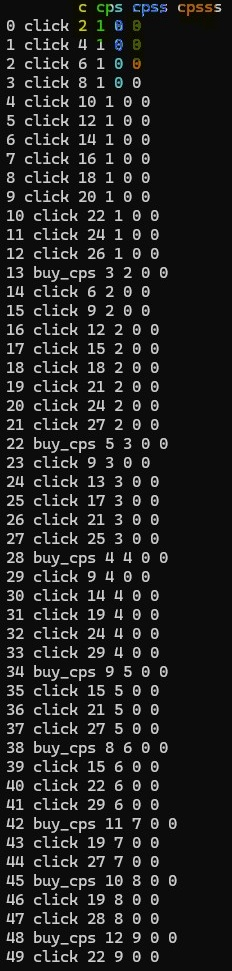

Introduction
Le but de ce cookie clicker est simple, très simple, terriblement simple: produire le plus de cookies possible ↓ Cela n'était pas très difficile à coder... Jusqu'au moment ou je décidai d'ajouter une fonctionnalité: l'auto-clicker. Mon idée était qu'en activant l'auto-clicker, une intelligence artificielle puisse jouer à notre place (en cliquant sur un des 5 boutons disponibles, chaque seconde) de manière à faire le choix parfait à chaque fois (Celui qui optimisera au maximum la production de cookies). Si dit comme ça cela peut paraître simple, je vous assure que ce ne fut absolument pas le cas... Essayer de coder ce fichu bouton allait m'imposer un passage obligatoire (un peu compliqué, je vous l'accorde) par les suites et les équations. Bon voyage, bonne dégustation, je déclare ouverte l'usine à cookies ↓↓↓
Commençons par le commencement:
Imaginons que je décide de créer un jeu pour me faire un peu d'argent. Un jeu simple à coder mais le plus addictif possible pour maintenir les utilisateurs dessus un maximum de temps et ainsi leur faire visionner un maximum de pubs. Car oui, comme le rappelle Benjamin Franklin: "Time is money", "le temps, c'est de l'argent". D'ailleurs, quand on voit qu'une pub statique est payée environ 1 centime par heure de visionnage, et que des géants comme Youtube et Tiktok investissent des millions de dollars dans l'entretient des serveurs, on comprends à quel point ce dicton devient célèbre. On comprends pourquoi de nos jours, il est si difficile de ne pas tomber dans une addiction numérique, quand les meilleurs ingénieurs sont recrutés pour nous faire tomber dedans. On comprends pourquoi on trouve de moins en moins de temps dans notre vie, qui en est pourtant composée: L'hyperconnectivité à atteint un tel point que des sociétés sont prêtes à en payer d'autres, spécialisées dans la diffusion rapide, pour afficher leurs publicités! Elles "investissent" de l'argent pour que des "diffuseurs rapides" nous retranscrivent leurs slogans, et le pire, c'est que si elles le font, c'est que ça marche. Le monde la la publicité est devenu un vrai buisness de nos jours, et c'est une conséquence directe à ce monde de surconsommation.
C'est pour cela qu'on peut devenir plus riche en créant un cookie clicker (dont la source de revenu est le temps des autres) qu'une usine alimentaire ! Alors soit, quelle est la recette ? Comment peut bien fonctionner ce jeu ?
Le premier ingrédient pour maintenir l'utilisateur un maximum de temps, c'est de lui donner quelque chose. Nous pouvons par exemple lui assigner une production de cookies, il sera très content.
Ensuite, il faut qu'il puisse créer et développer son bien. Par exemple en cliquant sur un bouton pour produire des cookies. Mais avec uniquement ce bouton, il finira par se lasser et quittera le jeu...
Ajoutons une cuillière à soupe de dopamine Il nous faut créer ce sentiment de progression, d'évolution. Pour cela, donnons-lui la capacité d'investir en cookies: payer 25 cookies pour 1 cookie par seconde, puis progresser encore et encore, de manière linéaire, puis quadratique, puis cubique, en ajoutant à chaque fois une couche de progrès.
Pour finir, lui faire gagner de l'argent réele "par cookies produits": Pour attirer davantage de joueurs, imaginons que chaque cookie produit rapporte une petite somme d'argent réel (donc avec le même sentiment de progrès). Le jeu devient alors à la fois un loisir et une activité rémunérée. Mais un problème apparaît immédiatement : combien puis-je verser par cookie sans risquer de perdre de l'argent ? Pour répondre à cette question, je dois connaître la stratégie optimale. Autrement dit, je dois savoir ce qu'un joueur parfait serait capable de produire. C'est précisément le rôle de l'auto-clicker que nous allons concevoir. Ensuite, On devra être capable de calculer le nombre de cookies maximal possible en fonction du temps, pour savoir combien payer par cookies sachant qu'au temps n, les pubs m'auront rapportées 0.01n€
Partie 1: Passage obligatoire par les suites
Pour commencer, il faut essayer d'exprimer le nombre de cookies en fonction du temps. Cela nous permettra de prédire le nombre de cookies à un temps t. Imaginons que nous sommes au début du jeu, et que l'utilisateur a acheté un producteur de cookies (1 cookie par seconde)
Le nombre de cookies qu'il aura produit à la seconde n sera de 1*n. Autrement dit, le nombre total de cookies à la seconde n C(n) est la somme des cookies produits par la machine additionnés au nombre de cookies que l'on avait au départ. Cela s'écrit comme cela: $$ C(n)=C(0)+\sum_{i=0}^{n-1}\ C'(i) $$
D'ailleurs, une propriété intéressante, est qu'entre la seconde p et la seconde n (des secondes entières bien sûr), on a produit C(n)-C(p) cookies... Autrement dit, $$ \sum_{p}^{n}\ C'(p) = C(n)-C(p) $$
C'est très visuel:


Si on s'intéresse au fonctionnement de notre cookies clicker, on remarque qu'à chaque seconde:
Et donc C(n)=C(0)+CPS(0)+CPS(1)+...:
$$ C(n)=C(0)+\sum_{i=0}^{n}\ CPS(i) $$
$$ C(n)= C(0)+\sum_{i=0}^{n}\ CPSS*i $$
$$ C(n)= C(0)+CPSS\sum_{i=0}^{n} i $$
$$ \Downarrow^{\text{Somme des entiers de }0\text{ à }n} $$
$$ C(n)= C(0)+CPSS\left(\frac{n(n+1)}{2}\right) $$
On a donc: $$ \begin{cases} C_{n+1}=C_n+CPS_n\\ CPS_{n+1}=CPS_n+CPSS_n\\ CPSS_{n+1}=CPSS_n+CPSSS_n\\ CPSSS_{n+1}=Constante \end{cases} $$
Donc :
$$ \begin{cases} C_{n+1}=C_n+CPS_n\\ CPS(n)= CPSSS\left(\frac{n(n+1)}{2}\right) \end{cases} $$
$$ \begin{cases} C_{n+1}=C_n+CPSSS\left(\frac{n(n+1)}{2}\right)\\ \end{cases} $$
$$ C(n)=C(0)+\sum_{i=0}^{n}CPSSS\left(\frac{n(n+1)}{2}\right)\\ $$
$$ C(n)=C(0)+CPSSS\sum_{i=0}^{n}\left(\frac{n(n+1)}{2}\right)\\ $$
$$ C(n)=C(0)+\frac{CPSSS}{2}n^3+CPSSS\,n^2+\frac{CPSSS}{2}n $$
Voilà, il faudra résoudre cette suite avec cette démarche à chaque seconde (car l'utilisateur jouerait en même temps d'avoir activé l'option 'clique 1 fois par seconde sur le bouton le plus rentable' ce qui changerait toutes les variables...
Généralisation: vers la n-ième dérivée discrète
Jusqu'ici, on a vu que chaque nouvelle amélioration de type "cookies par seconde par seconde..." ajoute un degré au polynôme décrivant l'évolution du nombre de cookies. Mais on peut généraliser ça (non ça ne nous sera pas utile, oui c'est par simple curiosité...):
$$ \begin{cases} C_{n+1}=C_n+CPS_n\\ CPS_{n+1}=CPS_n+CPSS_n\\ CPSS_{n+1}=CPSS_n+CPSSS_n\\ \vdots\\ X^{(k)}_{n+1}=X^{(k)}_n+X^{(k+1)}_n \end{cases} $$où X^(k) représente la k-ième dérivée discrète de la production de cookies. Car oui, chaque 'par seconde' supplémentaire est une dérrivée du précédent 'par seconde': CPS est la dérrivée de Cookies (en réalité, c'est plutôt Cookies qui est primitive de CPS mais l'un implique l'autre)
Si la dernière dérivée ajoutée est une constante A, alors chaque remontée dans la chaîne correspond à une somme discrète. Et on a vu précédemment que sommer une constante donnait une fonction affine, sommer une fonction affine donnait une fonction quadratique, sommer une fonction quadratique donnaiot une fonction cubique, etc. Après k intégrations discrètes, on obtient donc un polynôme de degré k :
$$ C(n)=a_kn^k+a_{k-1}n^{k-1}+\dots+a_1n+a_0 $$Le terme dominant (le coefficient devant le xle plus grand degrépeut être trouvé directement :
$$ C(n)\sim\frac{A}{k!}n^k $$La formule (que je n'ai pas trouvé tout seul 😅) peut se retrouver intuitivement (même si ça n'a pas été mon cas 🤣 ):
$$ 1\rightarrow n $$ $$ \sum n \rightarrow \frac{n^2}{2} $$ $$ \sum n^2\rightarrow \frac{n^3}{3} $$ $$ \sum n^3\rightarrow \frac{n^4}{4} $$et en continuant :
$$ \sum n^p \rightarrow \frac{n^{p+1}}{p+1} $$Donc en général :
$$ \boxed{ C(n)\sim\frac{A}{k!}n^k } $$Les coefficients complets sont donnés par la formule de Faulhaber, qui fait intervenir les nombres de Bernoulli :
$$ \sum_{i=1}^{n}i^m = \frac{1}{m+1} \sum_{j=0}^{m} (-1)^j \binom{m+1}{j} B_j n^{m+1-j} $$où B_j sont les nombres de Bernoulli.
ça fait un peu peur quand on la compare la formule d'une somme arithmétique (qu'on fait tous instinctivement en jouant aux cartes, quand on calcul la valeur d'une suite) ou géométrique (moins instinctive mais dont la démonstration n'est qu'un changement de variable bien pensé) Mais bon, nous n'en auront de toute manière plus besoin, la formule ne nous a servi qu'à assouvir cet insatiable besoin de comprendre l'essence de la chose et donc, par implication, la chose elle même y résultant(phrase très poétique, très 'je tourne autour du pot aussi', je vous l'accorde, mais quelle idée d'écrire après mon bac de philo)
Partie 2- Équations cubiques et dérrivées
Notre ia devra trouver l'expression C(n) à chaque seconde avec les variables Cookies; CPS; CPSS et CPSSS, qui peuvent à chaque seconde être modifiées par l'utilisateur qui, lui aussi cliquera sur les boutons en parallèle de l'ia (pour l'instant, on code le bouton 'clic parfait chaque seconde', pas 'meilleur scénario possible, qui ne nécessiterait pas de tout calculer avec de nouvelles variables chaque sec):
$$
\begin{cases}
C_{n+1}=C_n+CPS_n\\
C_{0}=\text{Cookies}\\[4pt]
CPS_{n+1}=CPS_n+CPSS_n\\
CPS_{0}=CPS\\[4pt]
CPSS_{n+1}=CPSS_n+CPSSS_n\\
CPSS_{0}=CPSS\\[4pt]
CPSSS_{n+1}=CPSSS_n\\
CPSSS_{0}=\text{Constante}
\end{cases}
$$
Mais dans notre cas, comme on cherche à tracer la fonction p(n) étant la fonction qui trace le nombre de cookies 'parfaits' possible d'acquérir en fonction du temps, on aura pas à faire ces calculs à chaque fois...
Une fois que l'ia aura trouvé C(s) qui sera de la forme C(s)=as3 +bs2 +cs +d, elle devra trouver sur quel bouton cliquer pour avoir l'amélioration la plus élevée en le moins de temps possible:
En trouvant C(s), l'ia saura que l'amélioration la plus élevée (prix: 500 cookies) sera débloquée sans intervention dans t secondes, pour t étant le plus petit entier solution de Cookies(t) >= prix (ici 500)
Les règles sont assez simple:
Il suffit maintenant de résoudre pour les 4 fonctions possibles C(t)>=500 pour t la plus petite valeur naturelle respectant l'inégalité. Celle qui aura le t le plus petit correspondra au bouton qui permet d'acquérir l'amélioration la plus rentable.
Pour résoudre cela, on pourrait tenter une approche analytique classique : on cherche d’abord à résoudre l’inéquation $$ C(t) \ge 500 $$ en la ramenant à une équation polynomiale du type $$ at^3 + bt^2 + ct + d - 500 = 0. $$
On pourrait alors déterminer les racines de ce polynôme afin d’obtenir les instants critiques où la fonction dépasse le seuil.
La solution exacte est donnée par les formules de Cardan pour les équations cubiques. On peut alors isoler la plus petite racine réelle positive, puis prendre l’entier supérieur correspondant au premier instant où l’inégalité est vérifiée.
Cependant, cette méthode est assez lourde (il faudrait gérer toutes les opérations, les cas de discriminants... Et pour un petit script python, cela ne vaut pas le coup) Excluons donc cette méthode.
I- while, et dichotomie:
On peut aussi rechercher la solution numériquement en simulant l’évolution du système pas à pas et à tester l’inégalité à chaque instant (avec while) :
t = 0
while C(t) < 500:
t = t + 1
C'est simple, bourrin et efficace. Cela peut fonctionner dans notre cas mais si je décide de changer quelques paramètres et que le seuil mais plus de temps à être atteint, notre script mettra trois plomb à trouver. Non, il nous faut autre chose qui permet de faire le moins d'itérations possible pour que le script s'éxécute rapidement...
Testons autre chose...
Si je vous dit dichotomie, ça vous parle ? Elle consiste à encadrer la racine dans un intervalle puis à réduire cet intervalle de moitié à chaque itération:
Si vous choisissez un nombre entre 0 et 100 000 000, je pourrais le trouver en 27 coups maximum en vous demandant à chaque fois "est ce que votre nombre est dans l'interval [0;50 000 000]" et à chaque fois, le nombre de possibilités sera divisé par 2 jusqu'à ce que je tombe dessus. Cela marche donc très bien pour trouver des entier...
a, b = 0, 500 ##Car le nombre de cookies au temps 500 est forcément supérieur (ou égal) à 500 si on a minimum 1Cps
while b - a > 1e-6:
m = (a + b) / 2
if C(m) < 500:
a = m
else:
b = m
print(a)
Si l’intervalle initial est de taille N, après une itération il reste N/2 possibilités, puis N/4, puis N/8, etc. Après n itérations, la taille de l’intervalle vaut : N / 2n
Comme notre fonction Cookies(x) est continue, strictement croissante, tend vers l'infini, on est sûr qu'elle dépassera forcément le seuil fixé. En testant avec notre while, on aurait un nombre d'itérations qui peut devenir énorme. Calculons-le en fontion... de la fonction
notre script calcule avec un pas de 1 quand ax3+bx2+cx+d devient supérieur ou égal au seuil.
Donc le nombre d'itérations effectuées par le script sera tout simplement la plus petite racine positive arrondie à l'entier supérieur, qui est solution de ax3+bx2+cx+d-seuil=0

Maintenant, si on calcule le nombre d'itérations en fonction du seuil S avec la méthode de dichotomie, cela revient à résoudre N / 2n ≤ 1, c'est à dire, quand est ce que mon interval est plus petit ou égal à 1, autrement dit, quand est ce que j'aurais trouvé la solution à l'entier près, de l'équation ax3+bx2+cx+d-seuil=0
en simplifiant, on trouve n ≥ log2(N)


II- Encore plus rapide avec la méthode de Newton-Raphson:
La dichotomie est déjà très efficace car elle divise le problème par 2 à chaque itération. Mais elle ne tient pas compte de la forme de la fonction. On peut faire encore mieux avec une méthode qui "utilise la pente" de la courbe : la méthode de Newton-Raphson. L’idée est qu'au lieu de couper l’intervalle en deux, on suit la tangente de la courbe pour aller directement vers la racine. La formule à appliquer est:
Ici, f(x) correspond à notre fonction :
et sa dérivée :
def f(x):
return C(x) - 500
def df(x):
return 3*a*x**2 + 2*b*x + c # dérivée de ax^3 + bx^2 + cx + d
x = 1 # point de départ
while abs(f(x)) > 1e-6:
x = x - f(x) / df(x)
print(x)
Contrairement à la dichotomie, la méthode de Newton-Raphson converge en très peu d’itérations si le point de départ est bien choisi.
Là où la dichotomie nécessite environ log2(N) étapes, Newton-Raphson peut atteindre la solution en moins de 5 à 7 itérations dans de nombreux cas.
Bon, après, cette rapidité a un prix: la méthode peut diverger si le point de départ est mal choisi ou si la dérivée est proche de zéro mais si on utilise cette méthode après que l'utilisateur ait acheté un cookie par seconde, et qu'on prends x=0 comme point de départ, ça fonctionne bien.
Partie 3: Codage de l'ia
Premier problème: greedy algorithm 😫😫😫
J'avais terminé la partie maths, et commençai tout content à coder mon ia. Cela étant fait, j'éxécutai, et voici le output (la sortie) qu'il me renvoya:
